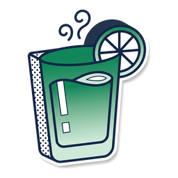
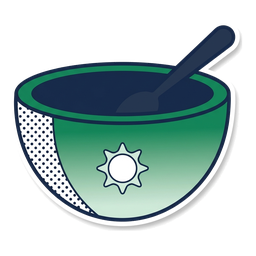
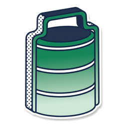
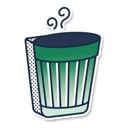
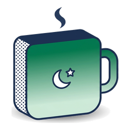

What a person sees on the Eat screens, and the logic behind every number on them. Each slide reads in two halves: what you see, then why it works this way.
Built from the r3 prototype and the live GoodFlip app code. Anything the app does not do today is tagged New in EM3. Use the arrow keys or click to move.





To-do is adherence.
EM3 is motivation.
"Log breakfast", "Have your evening snack". A list of things to do. It already works, and doing them is what keeps a person on the program.
The Eat screen's job is the half that was missing: showing why the logging matters, today, in one number that moves when you act. Every element that follows is judged against that.
The rule of thumb: if it helps someone do the task, it belongs to To-do. If it makes them want to, it belongs to EM3.
The coach sets the targets once. The person logs. The app does the maths. KAIRA reads the pattern.
After the consultation, from the person's goal, body and health. Calories, then protein, carbs, fats and fibre.
Tick the coach's plan, search, or tell KAIRA with a photo or your voice. The time decides the meal.
Nutrition sufficiency rises with every log, and the win moment shows by how much.
Trend shows each day and the running average. After seven days, KAIRA's insight unlocks.
FlipCoins reward step 2. Learn and the coach's tips explain step 1. Nothing else on the pillar asks the person to do anything.
The app holds no formula for this (no BMR, TDEE or activity maths in app.goodflip.in). The coach decides, in a separate coach portal, and the plan arrives finished.
| Target | Example | How it is stored |
|---|---|---|
| Calories | 1,900 kcal | The plan's total |
| Protein | 95g | 20% of calories ÷ 4 |
| Carbs | 238g | 50% of calories ÷ 4 |
| Fats | 63g | 30% of calories ÷ 9 |
| Fibre | 30g | New in EM3 |
App: a plan carries health_coach_id, total_calories, protein, carbs, fat, approved_by, chief_remarks (src/types/foodDiary.ts). Backend: modules/v8/diet/index.js:2056 (grams from %), :929 (approved only), :41 (edit splits plan), chief_hc/index.js:551 (approval sets goal).
A calorie line under the score: "942 of 1,900 kcal" and "958 left for today". Before anything is logged it reads "1,900 kcal is the goal today". Past the goal it says "440 over", plainly.
The sufficiency sheet names who set it: a small card with the coach's name, "Eat coach · Set 14 Aug", and a Message button.
A free user picks a goal on a wheel: 1,000, 2,000, 3,000, 4,000 or 5,000 kcal. A paid user's goal row is disabled: the coach owns it. If no target arrives, the page falls back to 1,200. New in EM3 a paid user can edit too.
App: Insights/GoalSelectionBottomSheet.tsx calls /patient_hc/update_patient_calorie_goal (api/insightsApis.ts); disabled={isPaidUser} in DietInsightsPage.tsx; total_calories ?? 1200 in DietPage.tsx.
The date chip, then the score: nutrition sufficiency out of 100, with one status chip under it. Then what you have eaten: protein, carbs, fats and fibre, each its own icon filling to its level, "43/95g". Then the calorie line.
KAIRA's card: one or two sentences of insight, never a recap. "Protein is the one lagging at 43g of 95g: pick the roasted chana at your evening snack and it climbs by 9g."
Your meals: every meal of the day, always open, in the coach's order. The bottom bar has Eat, Trend and Learn, with KAIRA's button floating above.
Why this order: the motivating number comes first, the evidence second, the action third. The person never has to scroll to find out how the day is going.
New in EM3 The app has no score today. The backend returns raw grams and calories only (calories_adherence_patient, diet/index.js:1339). Sufficiency is ours to define and compute.
Beside the date: "+31 from yesterday". It waits until today's plan is fully logged, because a half day against a whole one would punish the time of day.
What does not move it: opening the app, switching plan options, ticking a coach tip, or going over target.
added to today's score, "Protein moved most".
Breakfast logged: the score steps from 12 to 34.
Meal name, "Suggested 8:00 - 10:00 AM · 486 of 382 cal". The window and the meal's calories both come from the coach's plan.
App: windows are plan data, diet_plan_meal_rel start and end time. Meal calories are summed live from the chosen option (diet/index.js:1786).
Option chips (Option 1, 2, 3) with a check on the chosen one, then the foods. Switching an option changes what you look at, never what the day adds up to.
App: the day total sums every option on purpose so it does not jump (helpers/diet.ts, buildDietData).
No expand, no collapse, no chevron. The plan is the most useful thing on the screen, so hiding it behind a tap costs a tap every meal. Without a plan, four core meals show instead of six.
App: meal slots come from the API (early morning, breakfast, morning snack, lunch, evening snack, dinner) and a coach can hide any (hide_meal). There is no Bedtime slot today. New in EM3
App today: ticking leaves for a confirm page (pages/Diet/FoodDetailsPage.tsx, pickBestMealForTime). Abstain is "Didn't eat this?" (AbstainDietItemBottomSheet.tsx). New in EM3 confirming on the card.
A search field, then two tabs: Recent and Favourites. Pick a food, set the quantity in its own unit ("2 x 1 katori"), set the time. Several foods can wait in the tray and save together.
Snap a photo or say it out loud. KAIRA finds the foods and their nutrition, even for a dish the database has never seen, and the person confirms.
App: photo, voice and KAIRA are real log sources (text, image, audio, kaira). KAIRA asks an LLM for an unknown food's nutrients and saves it (log_food_using_kaira_v2, diet/index.js:3079). Manual relink at :661.
| Case | What it says |
|---|---|
| First log of the day | "Your score has started." Small is expected this early. |
| A meal is complete | Names the next meal and offers to log it. |
| Every target met | One bloom of light. "This is the day to repeat." |
| A small log | "A small one, and it still counts." |
| No plan yet | No score to move, so it counts what went in. |
Smooth eases only, no bounce. Undo stays reachable while the screen is up. New in EM3
per log
most in a day
a week's streak
a month's streak
An Earn chip sits beside the Eat title. It opens a sheet: what one log earns, how many of today's four are in, your current streak, and the week and month bonuses. When coins land, the app's own coin toast plays: "You have earned FlipCoins".
The Diet header reads its rules from /rewards/rules?activityType=diet&category=DAILY and the sheet prints "+coins on every log" with a cap per day. The amounts live in the backend, not the app. Every food log fires a FOOD_LOG reward, dated by when the food was eaten. The +20 and +50 come from the app's streak sheet; 1 a log and 4 a day are the prototype's numbers until the backend confirms them.
App: molecules/Header/index.tsx, bottom-sheets/FlipCoinsBottomSheet/index.tsx. Backend: diet/index.js:727.
A heart on any food row in the logger. Hearted foods live in the Favourites tab beside Recent. Before anything is hearted, the empty tab shows the very heart it asks you to press.
Why
Recent is what you reach for by habit; Favourites is what you chose to keep. Most people eat the same 20 things, so two taps should log them.
App today: the last 4 searches only (pages/Diet/FoodSearchPage.tsx). New in EM3
Under a meal: the parts of a plan that are not food. "Drink warm methi seed water before breakfast", with a square tick and an Ask KAIRA chip that answers the question the tip raises.
Why
A square tick, not the round food tick, because ticking a tip does not log food or move the score. Every plan food also carries a "why it is here" line.
App: one tip per plan option (DietPlanMealCard.tsx, optionTip). New in EM3 Ask KAIRA on a tip, and the Learn tab: the app's only diet reading is an "About Calories" card on Insights.
Seven small gauges, Monday to Sunday, each the day's sufficiency. At the top: the week's score and one tag.
App: the adherence endpoint already serves 7D, 30D, 90D and longer (diet/index.js:1339). Today's Insights page shows a calorie bar chart and protein, carbs and fats rings (DietInsightsPage.tsx).
"Your insight unlocks in 4 days." Seven segments fill as days come in: "3 of 7 days are in."
A gift box peeks from the card's corner. Unlock my insight opens it in a burst of gold.
What went well, the one gap and how to close it. It folds away with Show less.
New in EM3 The gift box is the Metabolic Kickstarter's own animation.
A padlock on the score, real grams with no targets, "1,213 kcal so far today", four core meals. "Your coach reads days like this one before building your plan."
That day's score, still, no motion. Read only, with one "Log for that day" to backfill. Tomorrow cannot be reached.
An empty ring, "Nothing was logged that day", once, not four zeros. "One line is better than none, even from memory."
One day in: the week's score is that day's, with its tag. Future days are greyed. KAIRA counts down to her insight.
| Coach diet plan with meals, options, time windows and tips | Exists |
| Calorie goal, protein, carbs and fat targets | Exists |
| Tick to log with quantity and time confirm; time picks the meal | Exists |
| "Didn't eat this?" abstain on a plan food | Exists |
| Search, photo, voice and KAIRA logging | Exists |
| FlipCoins on food logs, streak sheet | Exists |
| Insights: calories over 1D to 1Y, macro rings | Exists |
| Past days can be backfilled | Exists |
| Nutrition sufficiency score, its sheet, the +X% jump | New |
| Fibre as a target and a logged value | New |
| Plan logging on the card, one meal at a time | New |
| Win moment and the success screen | New |
| Favourites tab with hearts | New |
| Ask KAIRA on a coach tip; KAIRA's day card | New |
| Trend week: day gauges, running average, tags | New |
| KAIRA's weekly insight and gift box; Learn tab | New |
| Future days unreachable; paid users can edit calories | Changed |
Client, a new endpoint, or a nightly job that stores a value per day. The date sheet draws a ring for every day of a month, so it needs a cheap read.
A fibre target on the diet plan and a fibre column on the food log. Without both, a quarter of the score cannot be computed.
At lunch a day reads 54 and shows "Room To Grow", though half the day is still to come. An earlier design said "Building your day" until the plan was in. Which do we ship?
The backend can record a patient edit, but nothing calls it, and the paid app disables it. Where does the edit live, and does the coach get told?
Approving a plan overwrites the calorie goal with no history, so a past day cannot be read against the goal that applied then.
The server's date decides a day, and its IST shift is commented out. Does a missed day still count toward KAIRA's seven?
The app's slots are early morning, breakfast, morning snack, lunch, evening snack and dinner. EM3 shows pre-breakfast and bedtime. Rename, or add a slot?
1 a log and 4 a day are the prototype's. The real rule comes from /rewards/rules. Do they match?